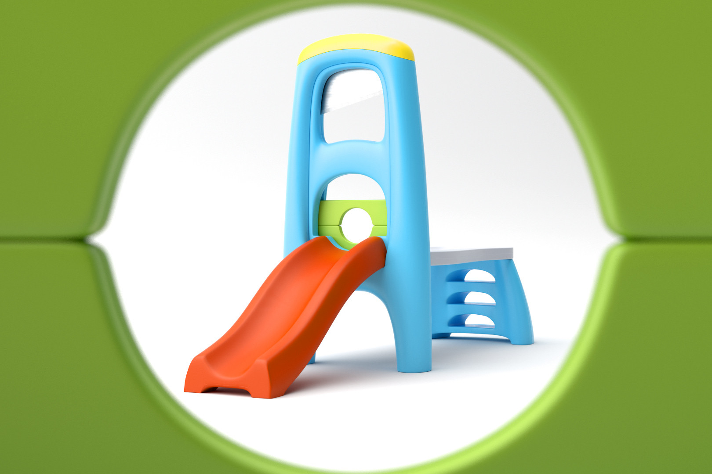

FISCHER PRICE REVOLUTIONARY DEVICE
Technology creates ritual, rituals create customs, and a collection of customs define a culture. Design is the intersection between technology and culture, it takes something alien and contextualizes it with who we are. If a designer accepts this role, they must also accept the role of risk taker. The Fischer Price Revolutionary Device examines the hazards of contextualizing a technology.

When we adopt a technology we take a risk, the consequences of this risk may be physical (as with carcinogens such as cigarettes), environmental (as with carbon based fuels), or cultural; like when we set up a culture of conspicuous consumption with buzzwords that sell a new iteration of the same Post Optimal Device every year. All of these risks have consequences, and if we do not address them our children will.